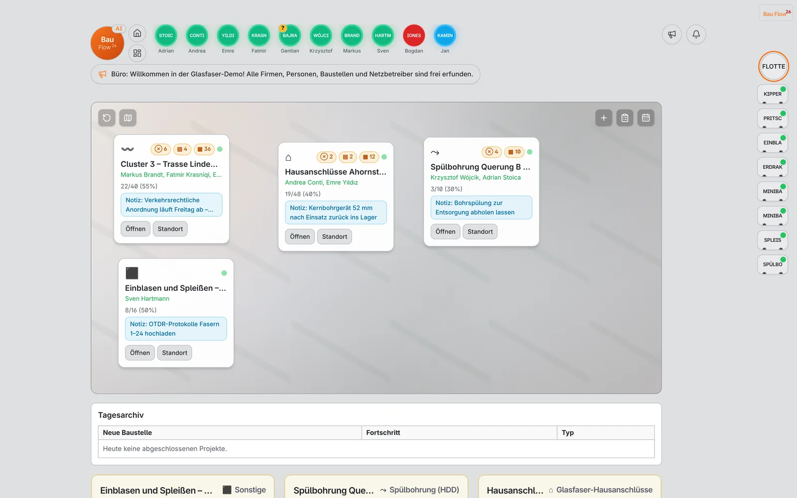
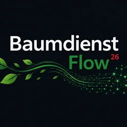
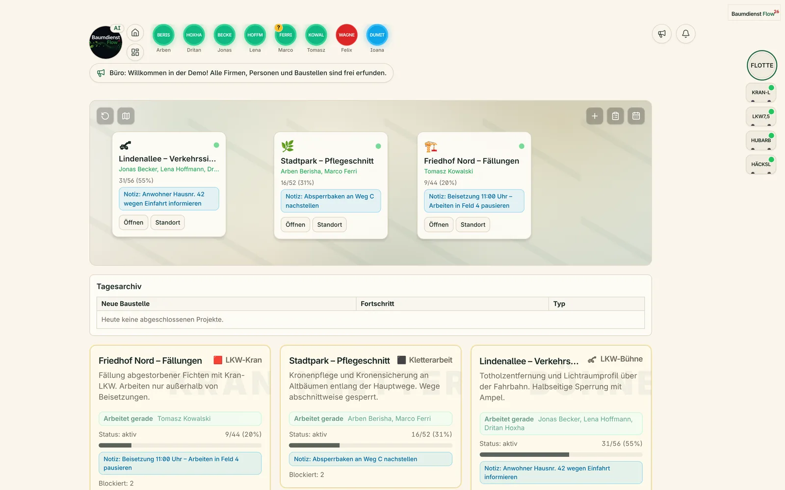

Den Tag vorbereiten.
Teams einteilen, Baustellen vorbereiten und Maschinen zuordnen. Ein gemeinsamer Tagesplan statt verteilter Absprachen.
Tagesplan · Personal · MaschinenSOFTWARE FÜR BAU, TIEFBAU & GLASFASER.
Ihr Büro. Ihre Teams. Ihre Baustellen.
Ein gemeinsamer Flow.
Von der Arbeitsliste bis zum Tagesbericht: BauFlow verbindet Planung, Menschen und Maschinen. Damit draußen und im Büro derselbe Arbeitsstand zählt.
Ohne Login · Schreibgeschützt · Mit fiktiven Beispieldaten
Klare Abläufe treffen
moderne Software.
01 / DAS PRODUKT
Weniger verteilte Informationen.
Mehr gemeinsamer Überblick.
Was geplant ist, wer wo arbeitet und welches Werkzeug unterwegs ist: BauFlow bringt die Informationen Ihres Betriebs zusammen.
Mitarbeitende, Baustellenfortschritt und Arbeitsstunden in einer Betriebsübersicht.
01 / 05Original-Screenshots aus der laufenden Anwendung. Alle gezeigten Firmen, Personen und Baustellen sind fiktive Demo-Daten.
02 / IM ARBEITSALLTAG
BÜRO ↔ BAUSTELLEWenn Teams, Material und Maschinen zusammenpassen, kommt die Arbeit voran. BauFlow verbindet die nächsten Schritte.
Teams einteilen, Baustellen vorbereiten und Maschinen zuordnen. Ein gemeinsamer Tagesplan statt verteilter Absprachen.
Tagesplan · Personal · MaschinenArbeitslisten öffnen, Zeiten erfassen und den Fortschritt festhalten. Hinweise und Absicherung bleiben an der Baustelle.
Workzone · Arbeiten · AbsicherungArbeitsstunden, Berichte und Baustellenfortschritt zusammenführen. Eine klare Grundlage für die nächste Planung.
Dashboard · Stunden · BerichteFÜR DEN EINSATZ GEMACHT.
Ob Trasse, Hausanschluss oder Montageeinsatz: Ihr Team erreicht die relevanten Arbeiten und Informationen direkt am Handy.
Arbeiten statt ZettelwirtschaftArbeitslisten, Zusatzarbeiten und Hinweise im Baustellenkontext.
Start. Pause. Stopp.Arbeitszeit dort erfassen, wo Ihr Team im Einsatz ist.
Material & AbsicherungBaustellenausrüstung und den gemeinsamen Arbeitsstand im Blick behalten.
03 / DIE TECHNOLOGIE
Einblick auf GitHubEin gemeinsamer SaaS-Kern für Menschen, Baustellen und Geräte. Mit klaren Rollen und Daten im richtigen Firmenkontext.
Ein gemeinsames System für Ihren Betrieb. Branchenspezifische Abläufe auf einer modernen Plattform.
Ein lesender KI-Assistent für Fragen zu Personal, Stunden, Baustellen und Betriebswissen. Antworten im jeweiligen Unternehmenskontext.
Optional konfigurierbar. In der öffentlichen Demo nicht aktiviert.
Rollen und Firmenkontext gehören zur Architektur der Plattform.
Ein gemeinsamer Kern für branchenspezifische Abläufe und Erweiterungen.
Automatisierte Unit-, Integrations- und Browser-Tests in der Entwicklung.
Prüfprotokoll ansehen ↗04 / DIE PRODUKTFAMILIE
EINE PLATTFORM. IHR GEWERK.BauFlow und BaumdienstFlow nutzen dieselbe Plattform. Die Begriffe, Funktionen und Arbeitslisten passen sich dem jeweiligen Gewerk an.
Arbeitslisten, Trassen und Baustellenteams.
Für Menschen, die draußen bauen.


BAUMPFLEGE & BAUMDIENSTBaumdaten, Baumpflege und Außenteams.
Dieselbe Plattform. Ein anderes Gewerk.

TECHNOLOGIE MIT BODENHAFTUNG.
BauFlow überträgt die gemeinsame RediOnFlow-Grundlage auf Bau-, Tiefbau- und Glasfaserbetriebe: mit Arbeitslisten, Teams, Maschinen, Werkzeug und Dokumentation im selben System.
Entwickelt von Redion Çekrezi — Full-Stack- und Applied-AI-Entwickler. Der Anspruch: komplexe Abläufe in klare, nachvollziehbare Werkzeuge für Menschen übersetzen.
“Upgrade humans.Mehr über den Entwickler
Not replace them.”
GUT ZU WISSEN.
Ein erster Einblick ist nur einen Klick entfernt. Für Ihren konkreten Betrieb sprechen wir persönlich.
Eine Frage stellenBauFlow richtet sich an Bau-, Tiefbau- und Glasfaserbetriebe mit Teams im Außeneinsatz. Die öffentliche Demo zeigt beispielhaft eine fiktive Glasfaserfirma mit Baustellen für Trasse, Hausanschlüsse, Einblasen und Spleißen sowie Spülbohrung.
Ja. Die öffentliche Live-Demo öffnet ohne Login und ist schreibgeschützt. Alle Firmen, Personen, Baustellen und Netzbetreiber sind fiktiv. Eine persönliche Vorführung oder einen Admin-Zugang zum Ausprobieren erhalten Sie auf Anfrage.
RediOnFlow ist die gemeinsame Plattform für BauFlow und BaumdienstFlow. BauFlow verwendet branchenspezifische Begriffe und Arbeitslisten für Bauunternehmen. BaumdienstFlow ergänzt die Abläufe für Baumpflege und Baumdaten.
Die Workzone ist für mobile Nutzung auf der Baustelle ausgelegt. Ein Offline-Modus für ausgewählte Feldaktionen befindet sich in Entwicklung. Für die aktuelle Demo und verlässliche Nutzung ist eine Internetverbindung erforderlich.
Sie sehen Workzone, Baustellen, Arbeitslisten, Personal, Maschinen, Inventar und weitere Betriebsansichten mit Beispieldaten. Optionale Dienste wie KI-Assistent, Push-Benachrichtigungen, Dateispeicher, Abos und GPS sind in der öffentlichen Demo nicht aktiviert.
Schreiben Sie uns kurz, wie Ihre Teams arbeiten und welche Abläufe Sie verbessern möchten. Umfang, Einrichtung, Pilotbetrieb und Konditionen besprechen wir passend zu Ihrem Betrieb.
DER NÄCHSTE SCHRITT.
Entdecken Sie die Anwendung. Und sprechen wir darüber,
wie sie zu Ihrem Arbeitsalltag passt.
REDIONFLOW / PLATTFORM-ZUGANG
Das Firmenkonto bestimmt Produkt und Arbeitsbereich. Mitarbeitende nutzen ihren persönlichen PIN. Die Demo enthält ausschließlich fiktive Daten.